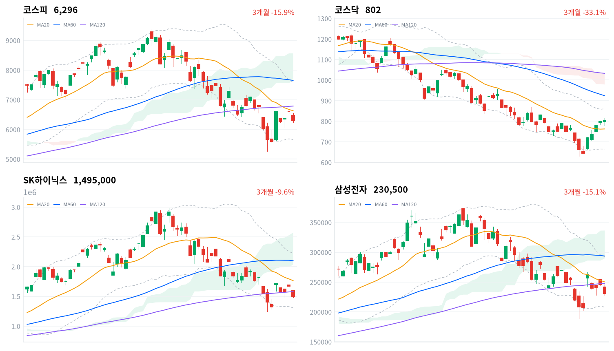
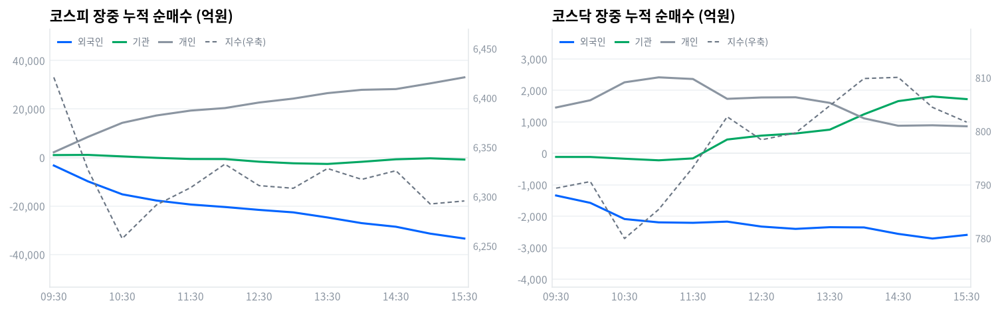

동인 전날 미 증시에서 나스닥이 AI 반도체·빅테크 차익실현 매물에 0.83% 밀린 여진이 6일 국내 증시로 그대로 전이됐다. 코스피는 개장부터 낙폭을 키워 오전 한때 5%대까지 밀렸고, 10시18분 코스피200 선물이 전일 대비 5.12%(987.24포인트) 급락한 상태가 1분 이상 유지되며 매도 사이드카가 발동됐다(한국경제·국제뉴스·아시아경제 보도). 결국 코스피는 -4.58%(6,296.38포인트)로 마감했지만 낙폭은 삼성전자·SK하이닉스 두 대형 반도체주에 집중됐다 — kr_industry.json 기준 60개 업종 중 51개가 상승했고 가장 크게 밀린 업종도 컴퓨터와주변기기(-0.55%)에 그쳤다. 코스닥이 반도체 대형주 비중이 낮아 +0.26%(801.67포인트)로 선방한 점이 이 해석을 다시 확인해준다.
크로스에셋·수급 정합성 외국인이 코스피에서 3조2,893억원(당일 잠정)을 순매도했고 개인이 3조3,367억원(당일 잠정)을 순매수하며 거의 1대1로 받아냈다. 거래대금 상위 표에서도 같은 구도가 드러난다 — SK하이닉스 레버리지(5,290.1억원)·삼성전자 레버리지(1,892.5억원)가 나란히 상위권에 올랐고 인버스 상품은 top10에 없어, 개인이 이번 낙폭을 저가 매수 기회로 받아들였음을 시사한다. 다만 프로그램 매매에서는 비차익 순매도가 2조3,010억원에 달해 기계적 차익거래(+1,753억원 순매수)보다 방향성 바스켓 매도가 훨씬 컸고, 이는 외국인·기관의 지수 하락 베팅과 결이 같다 — 개인의 개별 종목 저가매수와 기관·외국인의 바스켓 매도가 동시에 진행된 셈이라 단기 반등 여부는 이 힘겨루기의 승자에 달려 있다.
다음 촉매·확인 트리거 기술적으로 코스피 6,296.38포인트는 일목균형표 구름대(7,661.96~8,561.66포인트)는 물론 20일선(6,626.44포인트)까지 하회한 상태라 추세 전환을 논하기는 이르다. 20일선 6,626.44포인트 회복 여부가 1차 확인 트리거이고, 이를 못 넘으면 20·60일 저점인 5,262.77포인트가 다음 지지선으로 남는다. 대외적으로는 8월10일 미 ITC의 반도체 통상법 301조 조사 보고서 공개, 8월27일 한은 금통위가 다음 분기점이라 그 전까지는 개인 저가매수와 외국인 매도의 힘겨루기가 반도체 대형주 중심으로 계속될 공산이 크다.
| 지수 | 종가 | 등락률 | 일중 고가 | 일중 저가 |
|---|---|---|---|---|
| 코스피 | 6,296.38 | -4.58% | 6,550.94 | 6,238.32 |
| 코스닥 | 801.67 | +0.26% | 813.54 | 779.08 |
코스피는 전일 종가(6,598.26포인트) 대비 갭다운 출발한 6,478.75포인트에서 시작해 개장 초반부터 낙폭을 키웠다. 30분봉 기준 10시30분 6,257.37포인트까지 밀렸고 이 무렵 일중 저점 6,238.32포인트를 형성했다. 정오 무렵 6,332.75포인트까지 일부 되돌렸으나 오후 내내 6,308~6,328포인트 범위에서 등락을 반복하다 장 막판 다시 밀리며 6,295.44포인트(15시30분)를 거쳐 6,296.38포인트로 마쳤다.
코스닥도 코스피 급락에 연동돼 오전 한때 779.92포인트(10시30분)까지 밀리며 일중 저점 779.08포인트 부근을 형성했다. 정오 이후 꾸준히 낙폭을 회복해 14시~14시30분 809.81~810.03포인트까지 올라섰고(일중 고점 813.54포인트), 이후 소폭 되밀리며 801.67포인트로 마감해 +0.26%를 지켰다.
이 급락의 트리거는 전날 뉴욕 증시에서 나스닥이 AI 반도체·빅테크 차익실현 매물에 0.83% 밀린 여진이었다(뉴데일리·파이낸셜뉴스·edaily 보도). 오전 10시18분에는 코스피200 선물이 전일 대비 5.12%(987.24포인트) 급락한 상태가 1분 이상 유지되며 8월 들어 처음으로 매도 사이드카가 발동됐다(한국경제·국제뉴스·아시아경제 보도) — 프로그램 매도호가 효력이 5분간 정지되는 조치로, 낙폭이 순간적으로 과열됐음을 보여준다.

코스피 코스피는 6,296.38포인트로 마감해 20일선(6,626.44포인트)·60일선(7,648.79포인트)·120일선(6,786.18포인트)을 모두 밑도는 혼조 배열을 유지했고, 20일선과의 이격도는 -4.98%다. 볼린저밴드(20,2σ) %b는 0.33으로 중심선과 하단 사이에 위치하며, 일목균형표 구름대(7,661.96~8,561.66포인트)에는 크게 못 미치고 전환선(6,034.52포인트)만 웃도는 수준이다. 반등 시나리오는 20일선(6,626.44포인트) 회복이 1차 트리거로, 이를 넘으면 120일선(6,786.18포인트)과 기준선(6,941.46포인트)이 순차 저항이 된다. 반대로 밀리면 뚜렷한 지지가 마땅치 않은 구간이라 20·60일 저점인 5,262.77포인트가 최후 지지선으로 남는다.
코스닥 코스닥은 801.67포인트로 20일선(762.29포인트)은 5.17% 웃돌지만 60일선(923.94포인트)·120일선(1,032.69포인트)은 여전히 밑도는 역배열 구조다. 볼린저 %b는 0.701로 상단에 가까워 단기 과열 부담이 있고, 일목균형표 구름대(978.43~1,033.98포인트) 아래에서 전환선(722.26포인트)·기준선(793.22포인트)은 모두 상회했다. 상승 시나리오는 볼린저 상단(860.13포인트)과 20일 고점(867.38포인트) 돌파가 트리거로, 이를 넘으면 60일선(923.94포인트)까지 시야가 열린다. 반대로 20일선(762.29포인트)을 이탈하면 기준선(793.22포인트)·전환선(722.26포인트)이 순차 지지를 시험하고, 20·60일 저점(630.99포인트)이 최후 지지선이다.
SK하이닉스 SK하이닉스는 1,495,000원으로 20일선(1,763,500원)·60일선(2,098,483원)·120일선(1,579,192원)을 모두 밑도는 혼조 배열이며 20일선 대비 이격도는 -15.23%다. 볼린저 %b는 0.208로 하단에 근접해 있고, 일목균형표 전환선(1,533,500원)조차 아직 회복하지 못한 채 구름대(2,032,500~2,570,500원)와는 거리가 멀다. 반등 시나리오는 전환선(1,533,500원) 회복이 1차 트리거로, 이를 넘으면 120일선(1,579,192원)과 20일선(1,763,500원)이 차례로 저항선이 된다. 반대로 밀리면 볼린저 하단(1,304,414원)을 거쳐 20·60일 저점(1,246,000원)이 최후 지지선이다.
삼성전자 삼성전자는 230,500원으로 20일선(250,300원)·60일선(293,625원)·120일선(247,886원)을 모두 밑도는 혼조 배열이고 20일선 대비 이격도는 -7.91%다. 볼린저 %b는 0.266으로 하단권에 위치하며, 일목균형표 전환선(228,100원)은 이미 웃돌았지만 기준선(264,100원)과 구름대(290,000~336,625원)는 아직 멀다. 반등 시나리오는 120일선(247,886원)·20일선(250,300원) 회복이 1차 트리거로, 이를 넘으면 기준선(264,100원)까지 시야가 열린다. 반대로 전환선(228,100원)을 이탈하면 볼린저 하단(207,946원)을 거쳐 20·60일 저점(189,200원)이 최후 지지선이 된다.
위 레벨은 kr_technical.json의 이동평균·볼린저밴드·일목균형표·스윙 고저를 기계적으로 계산한 것으로, 투자 권유가 아니다.
코스피 수급표를 보면 외국인이 3조2,893억원(당일 잠정)을 순매도해 최근 며칠 새 가장 큰 매도 규모를 기록했다 — 직전 거래일인 8월5일 외국인은 오히려 1조4,464억원을 순매수했던 터라 하루 만에 방향이 급반전한 셈이다. 개인은 3조3,367억원(당일 잠정)을 순매수하며 낙폭 대부분을 받아냈고, 기관은 1,214억원 순매도에 그쳐 상대적으로 소극적이었다.
| 코스피 (억원, 당일 잠정) | 개인 | 외국인 | 기관 |
|---|---|---|---|
| 2026-08-06 | +33,367 | -32,893 | -1,214 |
| 코스닥 (억원, 당일 잠정) | 개인 | 외국인 | 기관 |
|---|---|---|---|
| 2026-08-06 | +863 | -2,481 | +1,615 |
코스닥에서는 외국인이 2,481억원(당일 잠정) 순매도한 반면 기관이 1,615억원 순매수로 대응했고 개인도 863억원 순매수를 보탰다 — 코스피와 달리 기관이 저가 매수에 가담한 점이 코스닥의 상대적 견조함(+0.26%)을 뒷받침한다. 코스피·코스닥을 합쳐 보면 외국인 매도는 두 시장 모두에서 일관됐지만 받아내는 주체가 다르다, 코스피는 개인이 코스닥은 기관이 주로 대응했다.

| 시각 | 코스피 (억원) | 코스닥 (억원) | ||||
|---|---|---|---|---|---|---|
| 개인 | 외국인 | 기관 | 개인 | 외국인 | 기관 | |
| 09:30 | 2,172 | -3,299 | 1,000 | 1,460 | -1,339 | -113 |
| 10:00 | 8,514 | -9,848 | 1,076 | 1,690 | -1,573 | -114 |
| 10:30 | 14,296 | -15,181 | 457 | 2,260 | -2,087 | -169 |
| 11:00 | 17,332 | -17,748 | -140 | 2,418 | -2,193 | -220 |
| 11:30 | 19,350 | -19,383 | -614 | 2,365 | -2,207 | -159 |
| 12:00 | 20,392 | -20,413 | -640 | 1,735 | -2,169 | 441 |
| 12:30 | 22,676 | -21,604 | -1,732 | 1,778 | -2,326 | 565 |
| 13:00 | 24,299 | -22,624 | -2,386 | 1,784 | -2,400 | 633 |
| 13:30 | 26,549 | -24,727 | -2,655 | 1,606 | -2,346 | 755 |
| 14:00 | 27,918 | -27,070 | -1,766 | 1,114 | -2,354 | 1,244 |
| 14:30 | 28,221 | -28,553 | -738 | 879 | -2,559 | 1,662 |
| 15:00 | 30,563 | -31,391 | -331 | 894 | -2,707 | 1,808 |
| 15:30 | 33,060 | -33,416 | -842 | 862 | -2,592 | 1,726 |
외국인의 코스피 누적 순매도선은 부호 전환(turn) 없이 하루 종일 일관되게 매도 방향을 유지했다. 09시04분 +890억원이던 누적치는 이후 반전 없이 계속 줄어들어 15시21분 -33,416억원(관측 구간 내 최저치)까지 흘렀다 — 단조 구간의 끝값일 뿐 방향을 꺾고 되돌린 '저점'은 아니다.
지수 궤적과 맞춰보면 코스피가 10시30분 전후(30분봉 기준 6,257.37포인트, 일중 저점 6,238.32포인트) 낙폭을 키우는 구간에도 외국인의 매도 누적은 조금도 누그러들지 않았다. 정오 무렵(12시00분 6,332.75포인트) 지수가 일부 반등한 구간에서도 외국인 매도는 계속됐고, 그 반등을 만든 힘은 개인 누적 순매수가 8,514억원(10시00분)에서 20,392억원(12시00분)으로 불어난 데 있었다 — 가격 반등이 외국인 수급 전환이 아니라 개인 매수 강도의 변화에서 나왔다는 뜻이다.
코스닥에서도 외국인 누적 순매도선은 부호 전환 없이 하루 종일 매도 기조를 유지해 09시01분 -267억원(관측 구간 내 최고치)에서 14시52분 -2,792억원(최저치)까지 확대됐다. 다만 코스닥은 기관이 11시40분을 기점으로 순매도에서 순매수로 돌아서며(정점 15시09분 +1,820억원) 지수를 방어했다는 점이 코스피와 다르다.
코스피 기관 내부를 나누면 금융투자(프로그램·선물 연계)는 12시30분~14시 사이 -73억원에서 -1,100억원까지 순매도를 키웠다가 14시30분 이후 급반전해 15시30분 +2,480억원으로 마감했다 — 이 막판 급반전은 프로그램 매매의 차익거래 순매수(+1,753억원)와 방향이 일치해, 마감 직전 선물 연계 기계적 매수가 유입됐음을 보여준다. 반면 연기금등은 오전 내내 1,200억~1,400억원대 순매수를 유지하다 정오 무렵(12시30분~13시) 일시적으로 소폭 순매도(-119억~-110억원)로 돌아섰고 14시 이후 다시 순매수(+1,095억~+477억원)로 복귀했다 — 정책성 장기 자금이 낙폭 국면에서도 매수 기조를 크게 벗어나지 않았다는 뜻이다.
두 축을 합쳐 보면 기관의 최종 순매도(-1,214억원, 당일 잠정)는 금융투자의 오후 매도가 연기금 매수를 일부 상쇄한 결과로 읽힌다.
정규장 마지막 관측치(15시30분) 기준 코스피 외국인 누적은 -33,416억원, 개인은 +33,060억원, 기관은 -842억원이었으나 이후 확정 발표된 수치는 외국인 -32,893억원·개인 +33,367억원·기관 -1,214억원으로 소폭 정정됐다 — 외국인 매도가 확정 과정에서 523억원 줄어든 반면 기관 매도는 372억원 늘어난 셈이다. 코스닥에서도 정규장 마지막 관측(개인 862억·외국인 -2,592억·기관 1,726억)과 확정치(개인 863억·외국인 -2,481억·기관 1,615억) 사이에 소폭 차이가 있다.
다음 거래일에는 외국인 매도 강도가 실제로 장중 스냅샷보다 완만했는지를 확정치 발표 흐름으로 재확인할 필요가 있다.
| 구분 (억원, 당일 잠정) | 차익 순매수 | 비차익 순매수 | 전체 순매수 |
|---|---|---|---|
| 코스피 | +1,753 | -23,010 | -21,257 |
| 코스닥 | +310 | -2,034 | -1,724 |
코스피 프로그램 매매는 비차익(방향성 바스켓)이 2조3,010억원 순매도를 기록해 전체 순매도(2조1,257억원)를 사실상 주도했고, 차익거래(선물 연계 기계적 매매)는 오히려 1,753억원 순매수로 반대 방향이었다 — 앞서 확인한 금융투자 계정의 15시30분 급반전(+2,480억원)과 같은 결의 흐름으로, 마감 직전 선물 저평가 국면에서 기계적 매수가 유입됐을 가능성을 시사한다. 비차익 매도의 방향은 외국인 순매도(-32,893억원)와 같은 쪽이라, 이번 낙폭이 지수선물 재정거래보다는 현물 바스켓 단위의 방향성 매도에서 비롯됐다고 읽는 편이 합리적이다.
코스닥은 비차익 2,034억원 순매도로 전체 순매도(1,724억원)를 이끌었으나 규모 자체가 코스피 대비 작아 같은 방향이되 강도는 약했다 — 다만 코스닥 기관의 최종 순매수(+1,615억원)는 프로그램 매매 밖, 즉 비프로그램 개별 매수를 통해 이뤄졌다는 뜻이 된다.
| 순위 | 종목/ETF | 구분 | 거래대금 | 거래량 | 비고 |
|---|---|---|---|---|---|
| 1 | SK하이닉스 | - | 8.07조 | 5,295,745 | - |
| 2 | 삼성전자 | - | 6.09조 | 26,095,404 | - |
| 3 | 반도체 테마 ETF | 롱 | 1.72조 | 61,074,618 | 8종 합산 |
| 4 | 삼성전자우 | - | 0.59조 | 3,325,061 | - |
| 5 | SK하이닉스 레버리지 | 롱 | 0.53조 | 65,376,965 | 2종 합산 |
| 6 | GS건설 | - | 0.23조 | 7,085,817 | - |
| 7 | 대우건설 | - | 0.19조 | 11,407,600 | - |
| 8 | 삼성전자 레버리지 | 롱 | 0.19조 | 19,798,800 | 2종 합산 |
| 9 | 전력·에너지 테마 ETF | 롱 | 0.19조 | 6,291,643 | 2종 합산 |
| 10 | 금호타이어 | - | 0.16조 | 19,927,188 | - |
눈에 띄는 대목은 top10에 인버스 상품이 하나도 없다는 점이다. 지수가 4.58% 급락한 날임에도 SK하이닉스 레버리지(5,290.1억원)·삼성전자 레버리지(1,892.5억원)가 나란히 상위권에 들었다 — 개인 투자자가 이번 낙폭을 숏이 아니라 레버리지 롱으로 받아쳤다는 뜻이고, 이는 코스피 수급표의 개인 순매수(+3조3,367억원)와도 같은 방향이다.
반도체 테마 ETF는 SOL AI반도체TOP2플러스·TIGER 반도체TOP10·TIGER 반도체TOP10레버리지·KODEX AI반도체TOP2플러스·KODEX 반도체레버리지·ACE K반도체TOP2+·TIGER 반도체TOP10커버드콜액티브·KODEX 반도체 등 8종을 합산한 값(1.72조원)이다. 같은 반도체 관련 개별주(SK하이닉스 8.07조+삼성전자 6.09조+삼성전자우 0.59조)와 레버리지 상품(SK하이닉스 레버리지 0.53조+삼성전자 레버리지 0.19조)을 더하면 15.47조원에 달해, 테마 바스켓(1.72조원)의 약 9배다 — 개인이 반도체를 산업 전체로 바스켓 매수한 게 아니라 SK하이닉스·삼성전자 개별 종목에 선별적으로 집중했다는 뜻이다.
건설 관련해서는 GS건설·대우건설이 나란히 거래대금 상위에 올랐다(각각 0.23조원·0.19조원). 전력·에너지 테마 ETF(KODEX AI전력핵심설비·TIGER 코리아AI전력기기TOP3플러스 2종 합산, 0.19조원)도 상위권에 진입해, 반도체 낙폭 국면에서 대체 테마로 자금이 일부 옮겨갔을 가능성을 보여준다.
위 섹터 차트(1D 기준 12개 테마)에서 반도체만 -7.01%로 크게 밀렸고 나머지는 대부분 플러스거나 낙폭이 -2.09%(로봇) 이내였다. 더 세분화된 kr_industry.json(60개 업종) 기준으로 봐도 같은 그림이 확인된다 — 60개 업종 중 51개가 상승, 1개 보합, 8개만 하락했고 가장 큰 낙폭도 -0.55%(컴퓨터와주변기기)에 그쳤다.
다만 이 60개 업종 목록에는 '반도체' 항목이 별도로 없다 — 삼성전자·SK하이닉스가 코스피 시가총액 최상위 비중을 차지해 지수 자체를 끌어내린 구조이지, 업종 breadth 데이터에는 반도체발 매도가 별도 항목으로 잡히지 않는다는 뜻이다.
상승률 상위 업종 중에서도 폭이 갈린다. 비철금속(+10.34%)은 40종목 중 20종목이 올라 breadth 0.5로 '폭넓은 상승 주도' 판정을 받았고, 화장품(+5.58%)은 65종목 중 50종목이 올라(breadth 0.769) 더 폭넓은 강세였다.
반면 건설(+1.82%)은 78종목 중 34종목만 올라(breadth 0.436) '좁은 상승·개별종목' 판정이다 — 거래대금 상위에 오른 GS건설·대우건설 등 개별 종목 재료(현대건설 실적 서프라이즈 등)가 업종 전체 지수를 끌어올렸을 뿐, 건설업 전반의 온기 확산은 아직 제한적이라는 뜻이다. 같은 논리로 은행(+1.79%, breadth 0.818)·손해보험(+2.38%, breadth 0.917)은 폭넓은 상승이 확인돼, 1주(1W) 차트의 건설(+29.26%) 급등과 달리 은행의 완만한 상승(1D +2.37%)이 오히려 더 넓은 저변 위에 서 있다.
SK하이닉스는 2분기 사상 최대 매출을 기록했음에도 AI 반도체 전반의 매도세 심화로 이틀간(8월5일~6일) 약 12% 하락했다 — 실적과 주가 반응이 괴리된 사례로, 리서치 추정치 기준 오늘 하루만 약 -10.37% 밀렸다(Benzinga Korea 보도). 실적은 양호하나 밸류에이션·AI 사이클 우려가 주가를 눌렀다는 서사가 거래대금 1위(8.07조원)라는 사실과 함께 읽힌다. 삼성전자도 같은 여진으로 리서치 추정치 기준 약 -6.30% 하락하며 거래대금 2위(6.09조원)에 올랐다.
비철금속 업종 1위 상승은 고려아연이 견인했다. 구리 관세·황산 가격 상승·제련수수료(TC) 하락이 겹치며 구리 가격 상승 전망이 부각됐고, 장중 업종 지수가 11%대까지 오르기도 했다(newspim 보도).
건설주는 GS건설(+4.65%, 32,600원)·대우건설이 나란히 거래대금 상위에 올랐다. 현대건설의 2분기 영업이익이 컨센서스를 24.4% 상회하는 등 건설업 실적 개선이 뒷받침됐고, 7월31일~8월6일 KRX 건설지수는 +29.12%로 전 업종 중 최고 상승률을 기록했다(한국경제 보도).
화장품 업종(+5.58%)은 개별 촉매보다는 미국·유럽向 수출 성장세가 이어지는 구조적 강세 흐름의 연장선으로 풀이된다.
이번 사이클에는 원/달러 환율 데이터가 수집되지 않아 국고채·회사채 금리로 채권시장 반응만 짚는다.
| 지표 | 금리 | 전일比(bp) | 기준일 |
|---|---|---|---|
| 국고채 3년 | 3.742% | +7.3bp | 2026-08-06 |
| 국고채 10년 | 4.195% | +4.5bp | 2026-08-06 |
| CD 91일 | 2.930% | +0.0bp | 2026-08-06 |
| 회사채 AA- 3년 | 4.445% | +5.3bp | 2026-08-06 |
| 한국은행 기준금리 | 2.750% | +25.0bp | 2026-07 (7월 기준, 당일 아님) |
3년물과 10년물이 나란히 오르며(+7.3bp·+4.5bp) 3s10s 스프레드는 45.3bp(10년 4.195%-3년 3.742%)로 정상적인 우상향 커브를 유지했다 — 단기물이 더 크게 올라 약보합성 플래트닝 압력이 소폭 가해진 정도다. 주식이 4.58% 급락한 날임에도 채권 금리는 오히려 전 구간에서 상승했다는 점은, 이번 코스피 낙폭이 금리·유동성 충격이 아니라 반도체 대형주 쏠림 매도라는 개별 재료성 이벤트였음을 뒷받침한다.
국고채 3년물(3.742%)은 한국은행 기준금리(2.75%, 7월 기준)보다 99.2bp 높다 — 8월27일 금통위를 앞두고 추가 인상 기대가 시장 금리에 상당 부분 선반영돼 있다는 뜻이다. 회사채 AA- 3년물과 국고채 3년물의 신용 스프레드는 전일 72.3bp(4.392%-3.669%)에서 오늘 70.3bp(4.445%-3.742%)로 오히려 소폭 좁혀졌다 — 주식시장의 급락에도 불구하고 회사채 시장의 신용 경계감은 확대되지 않았다는 뜻이라, 오늘 낙폭이 신용 리스크가 아닌 반도체 종목 쏠림 문제였다는 판정에 힘을 보탠다.
미국이 진행 중인 통상법 301조 2차 조사 대상 16개 경제권에 한국이 포함돼 있고, 조사 업종에 반도체가 명시돼 있다. 미 국제무역위원회(ITC)는 관련 상세 보고서를 8월10일 공개할 예정이며, 한국은 이미 미국과 15~19% 상호관세율을 고정하는 협정을 인도네시아·대만·캄보디아·방글라데시 등과 유사한 그룹으로 맺어둔 상태다(KITA·글로벌이코노믹 보도).
이 조사가 실제 주가에 닿는 경로는 두 갈래다. 관세·수출통제가 강화되면 반도체 대미 수출의 원가와 마진이 직접 눌리는 이익 경로가 작동하고, 보고서 공개 자체가 만드는 불확실성 프리미엄은 이미 쏠림 매도 중인 반도체 대형주의 변동성을 키우는 멀티플 경로로 작동한다.
오늘 삼성전자(리서치 추정 -6.30%)·SK하이닉스(리서치 추정 -10.37%)의 급락은 1차적으로 전날 미 반도체주 약세에서 비롯됐지만, 8월10일 보고서를 앞둔 통상 불확실성이 낙폭을 더 키웠을 가능성을 배제할 수 없다. 다만 보고서가 아직 나오지 않은 만큼 관세 자체의 영향이 선반영됐는지 미반영 상태인지는 이 시점에서 판정하기 이르다 — 일정 확인 후 재평가가 필요한 사안이다.
다음 확인 지점은 8월10일 ITC 상세 보고서 공개다. 관세율·품목이 구체적으로 확정되는지가 그 다음 트리거가 된다.
한은 금통위는 7월16일 기준금리를 2.50%에서 2.75%로 25bp 인상했다(kr_econ.json 기준 2026년 7월 2.75%, 전월 대비 +25bp). 다음 금통위는 8월27일로 예정돼 있다(파이낸셜뉴스 보도).
기준금리 인상은 할인율 상승을 통해 성장주·고밸류 반도체·바이오 등의 멀티플을 누르는 경로와, 은행·보험 등 금리 민감 업종의 이익에는 우호적으로 작동하는 경로 두 가지로 갈라진다.
오늘 은행(+1.79%, breadth 0.818)과 손해보험(+2.38%, breadth 0.917) 업종이 상대적으로 견조했던 점은 금리 상승 수혜 서사와 부분적으로 맞아떨어진다. 국고채 3년물(3.742%)이 기준금리(2.75%)보다 99.2bp 높다는 점은 추가 인상 기대가 이미 시장 금리에 상당 부분 선반영돼 있음을 보여준다.
8월27일 금통위 결정이 다음 분기점이고, 그 전에 발표되는 7월 소비자물가·성장지표가 인상·동결 판단을 가를 핵심 변수다(시장 전망은 엇갈리는 것으로 전해진다).
2026년 상반기 AI·반도체 랠리로 국민연금의 국내 주식 내 반도체·IT 비중이 목표치를 웃돈 것으로 알려져 있고, 하반기 리밸런싱 과정에서 반도체·IT 중심의 매도 압력이 예상된다는 분석이 나온다(PUM 지금 보도).
연기금의 비중 조절 매도는 뉴스·심리가 아니라 수급 경로로 직접 작동한다 — 기관 순매도, 그중에서도 프로그램 매매의 비차익 매도 흐름에 반영되는 방식이다.
오늘 기관은 코스피에서 1,214억원(당일 잠정) 순매도했다 — 외국인 매도(3조2,893억원)에 비하면 규모가 작다. 장중 수급 전개에서 확인했듯 기관 내 연기금등은 정오 무렵 짧게 순매도로 돌아선 것을 빼면 대체로 순매수를 유지했던 터라, 리밸런싱발 매도가 오늘 낙폭에 기여했더라도 주된 원인으로 보기는 아직 이르다 — 확정된 근거가 아니라 추정 수준이다.
국민연금의 공식 자산배분 발표나 분기 보고서 일정은 확정돼 있지 않다. 향후 기관 순매도가 반도체 대형주 중심으로 지속되는지를 지켜보는 것이 리밸런싱 압력을 재확인하는 방법이다.
2026년 2월25일 국회를 통과한 상법 3차 개정안은 자기주식을 취득 후 원칙적으로 1년 내(기존 보유분은 1년6개월 내) 소각하도록 의무화했다. 예외적으로 임직원 보상이나 제3자 처분에 쓰려면 주주총회 승인을 받아야 한다(Kim & Chang·법률신문 보도).
경영권 방어나 지배력 확대 수단으로 쓰이던 자사주의 활용도가 줄면서 주주환원(소각) 확대로 이어지는 구조라, 밸류에이션 멀티플에는 구조적으로 우호적인 재료다 — 기업지배구조 개선을 통한 코리아 디스카운트 완화 논리와 맞닿아 있다.
오늘 데이터만으로 이 재료와 직접 연결되는 개별 종목을 특정하기는 어렵다. 새 재료라기보다는 계류 중인 정책의 진행 상황으로 다루는 편이 맞다.
시행일 이후 개별 기업의 자사주 보유·처분 계획이 주주총회 승인을 받는 사례들이 다음 확인 포인트이며, 구체적 날짜는 아직 정해지지 않았다.